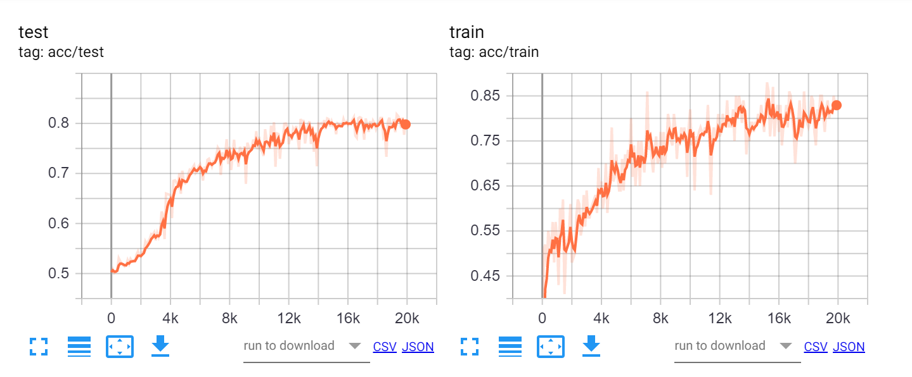
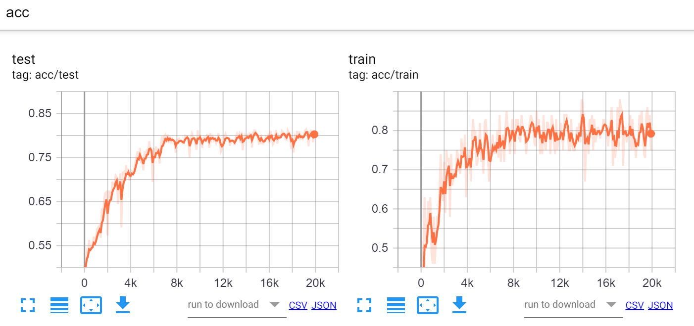

First I used Naive net, a 10 by 10 by 10 network. It ocnverges around 83%, which is not optimal.
Then I tried converging naive net
Then I tried adding a layer to the network

BAtch (2epochs)
All in vain
Shuffle the corners
graph
2 to 1
one way directed
with self loops and bidirectional
2to2
one way directed